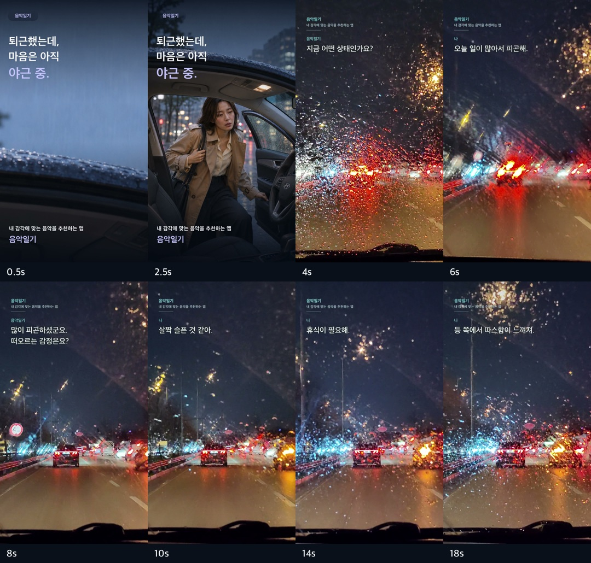
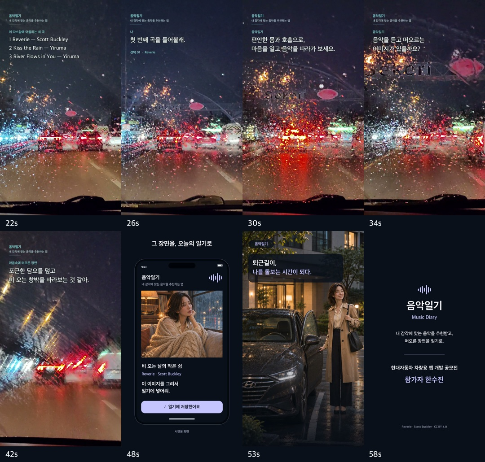

MUSIC DIARY
음악일기
지금 나에게 필요한 음악을 추천받고,
떠오른 장면을 나만의 일기로.
60초 · 야간 도심 주행과 차창 대화 · 음악 포함
영상 내려받기 ↓퇴근했는데, 마음은 아직 야근 중.
피곤함과 슬픔을 나누고, 지금 필요한 휴식을 찾습니다. 등의 따스한 감각에 어울리는 음악을 추천받고, 감상하며 떠오른 장면을 그림과 일기로 남깁니다. 목적지에 도착한 표정은 한결 편안해졌습니다.
실사 주행 영상에 차창 대화를 합성한 콘셉트 릴스입니다. 승차·하차와 심상에는 AI 이미지를 사용했습니다. 차창 대화와 일기 화면은 시연용 그래픽이며 실제 앱 기능을 촬영한 영상은 아닙니다.
장면 구성 보기

